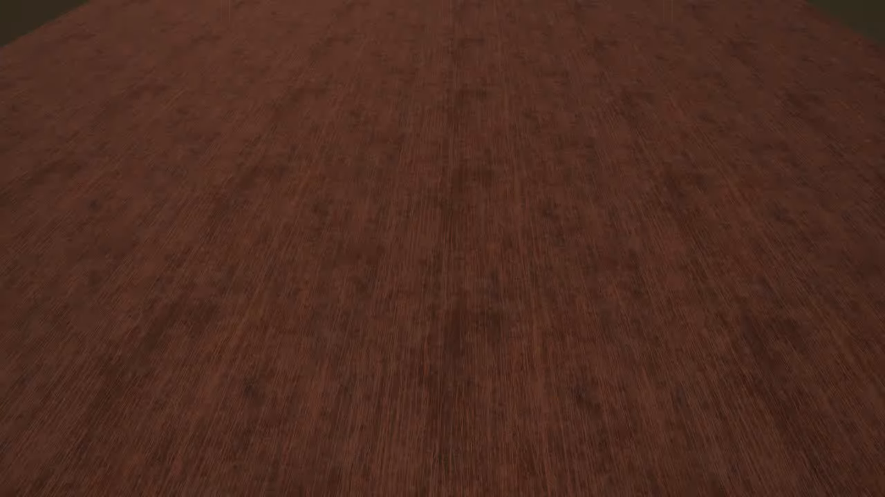
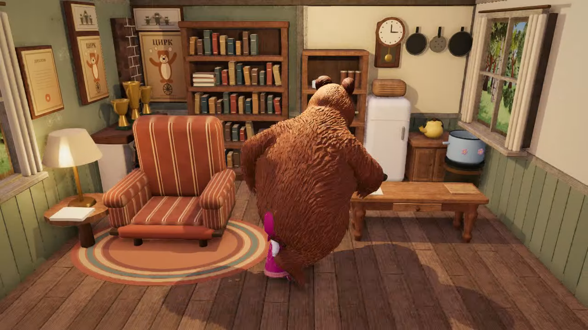
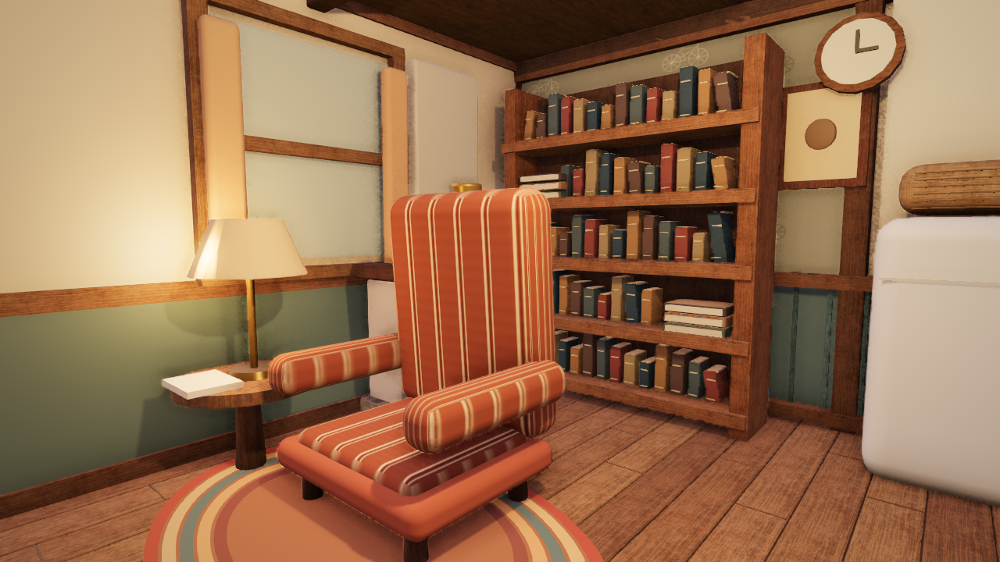
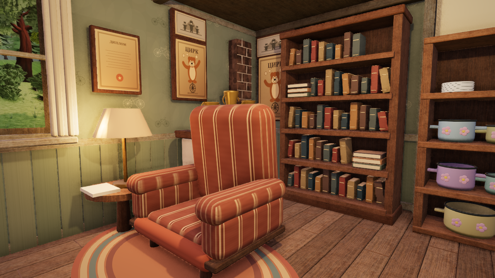
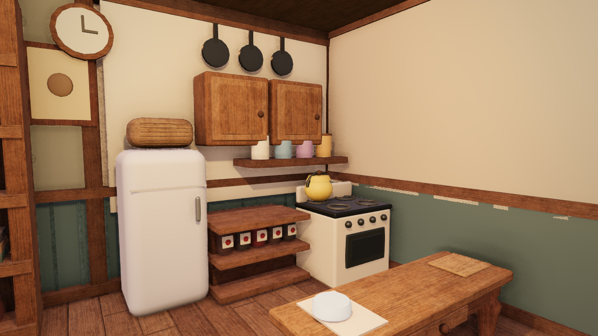
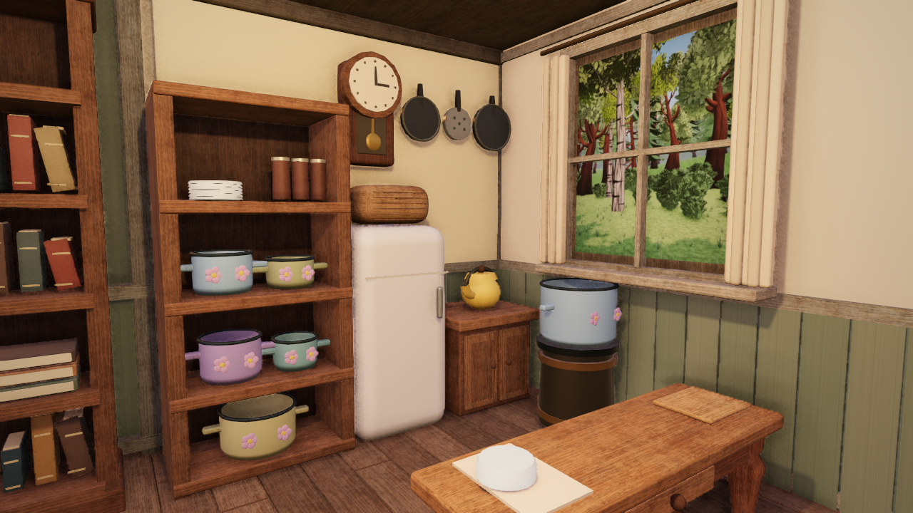

Bear’s house · before / after
The same “Cozy evening” animation, from 9–24 seconds. Local review; not deployed.
Before
After
Actual local WebGL playback through the game’s compiler and animation engine. Silent captures. The videos use the story camera; room detail views below use a fixed inspection camera.
Inspect the entry transition, room and kitchen
House entry · before
House entry · after
Room · before
Room · after
Kitchen · before
Kitchen · after
Review notes and verification